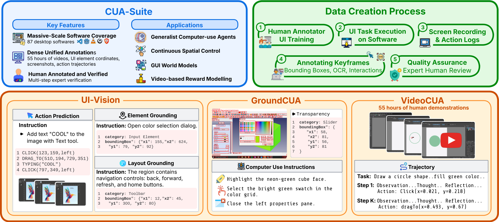
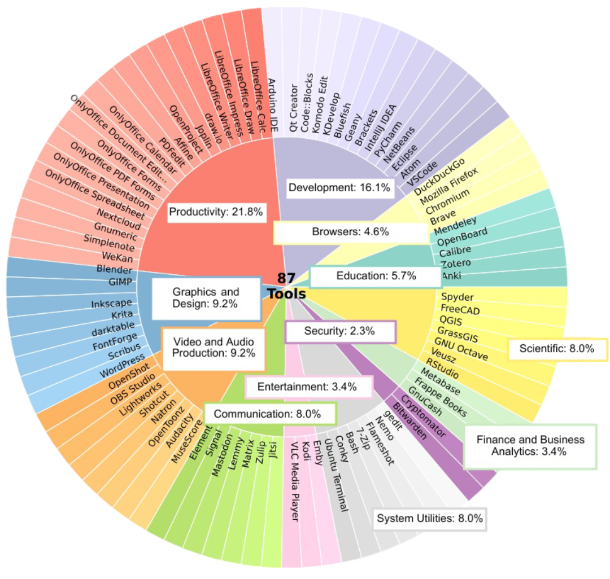

CUA-Suite unifies three complementary resources into a single ecosystem for full-stack computer-use intelligence.

CUA-Suite Overview. Human GUI trajectories are recorded across desktop platforms, expert-verified, and annotated with keyframes, OCR-enhanced bounding boxes, and interaction logs. The resulting CUA-Suite comprises UI-Vision, a comprehensive benchmark; GroundCUA, densely labeled UI screenshots with 3.5M annotations; and VideoCUA, 55 hours of expert video with detailed action trajectories.
The largest open expert video corpus for desktop computer use. Continuous 30 fps recordings with kinematic cursor traces and multi-layered reasoning annotations averaging ~497 words per step.
Large-scale pixel-precise UI grounding dataset built entirely by human curators. Powers the training of GroundNext 3B/7B vision-language models achieving state-of-the-art desktop grounding.
Rigorous desktop-centric benchmark evaluating element grounding, layout understanding, and action prediction across diverse professional applications.
Expert human behavior is captured as continuous 30 fps video across 87 professional desktop applications and enriched with dense, multi-faceted annotations.
87 open-source applications across 12 categories, from development (VS Code, Blender) to productivity (LibreOffice, GNUCash), mirroring popular commercial software.
Human experts design over 10,000 real-world tasks ranging from simple actions to complex multi-step workflows, ensuring coherent, goal-oriented demonstrations.
Continuous screen video at 30 fps producing ~55 hours and 6 million frames, with every mouse click, drag, scroll, and keystroke logged with millisecond precision.
Human annotators label every visible UI element with bounding boxes, textual labels, OCR text, and semantic categories, producing 5M+ element annotations across 56K screenshots.

Distribution of annotations across application categories in the CUA-Suite ecosystem.
The largest open expert video corpus for desktop computer use.
Unlike sparse screenshot datasets, these continuous video streams preserve the full temporal dynamics of human interaction and can be losslessly transformed into any agent framework format.
Detailed description of the current screen state, identifying relevant UI elements and spatial arrangement.
Reasoning process connecting the high-level task goal to the immediate action choice.
Intended action in natural language grounded to visual elements, plus executable pyautogui code.
Analysis of the outcome, enabling self-correction signals for training.
VideoCUA is the only large-scale, human-curated dataset providing continuous 30 fps expert video for professional desktop applications with multi-layered reasoning annotations.
| Dataset | Platform | Tasks | #Envs | Video | Desktop | Human | CoT | Scale |
|---|---|---|---|---|---|---|---|---|
| Web | ||||||||
| Mind2Web | Web | 2,350 | 137 | ~17K SS | ||||
| AgentTrek | Web | 10,398 | 127 | short | ~126K SS | |||
| Mobile | ||||||||
| AITW | Mobile | 715K | 357 | Mix. | ~4.6M SS | |||
| GUI-Odyssey | Mobile | 8,334 | 212 | Mix. | ~128K SS | |||
| Desktop & Cross-platform | ||||||||
| OmniACT | D+W | 9,802 | 65 | ~9.8K SS | ||||
| OSWorld | Desktop | 369 | 9 | Eval. | ||||
| VideoGUI | Desktop | 178 | 11 | Mix. | ~7h | |||
| OpenCUA | Desktop | 22,625 | 330+ | long | ~421K SS | |||
| ScaleCUA | Cross | ~19K | — | Mix. | ~2M SS | |||
| VideoCUA (Ours) | Desktop | ~10K | 87 | long | 55h (6M fr.) | |||
SS = screenshots. Video = continuous video recordings (not per-step screenshots). CoT = chain-of-thought annotations (long = multi-layered, short = brief).
CUA-Suite's continuous video streams and dense annotations form a superset of information that supports emerging research directions beyond traditional action prediction.
Dense, human-verified bounding-box annotations covering all interactable elements—including canvas-based and custom-drawn widgets missed by DOM-based approaches. ScreenParse has already explored this on a subset of GroundCUA data.
Intermediate cursor movements and complete video context preserve kinematic priors (e.g., Fitts's Law deceleration), enabling imitation learning or offline RL policies for feedback-driven navigation.
30 fps video recordings paired with timestamped actions provide dense (st, at, st+1) triplets for action-conditioned video generation and visual lookahead planning for desktop workflows.
Continuous expert video recordings with task-level annotations provide positive demonstrations for training reward models, while dense step-level annotations enable fine-grained, step-wise reward signals.
If you find CUA-Suite useful for your research, please cite our work.
@inproceedings{
jian2026cuasuite,
title={{CUA}-Suite: Expert Trajectories and Pixel-Precise Grounding for Computer-use Agents},
author={Xiangru Jian and Shravan Nayak and Kevin Qinghong Lin and Aarash Feizi and Kaixin Li and Patrice Bechard and Spandana Gella and Sai Rajeswar},
booktitle={ICLR 2026 Workshop on Lifelong Agents: Learning, Aligning, Evolving},
year={2026},
url={https://openreview.net/forum?id=IgTUGrZfMr}
}
CUA-Suite enables UI-Vision and GroundCUA. Please also cite the individual components if you use them.